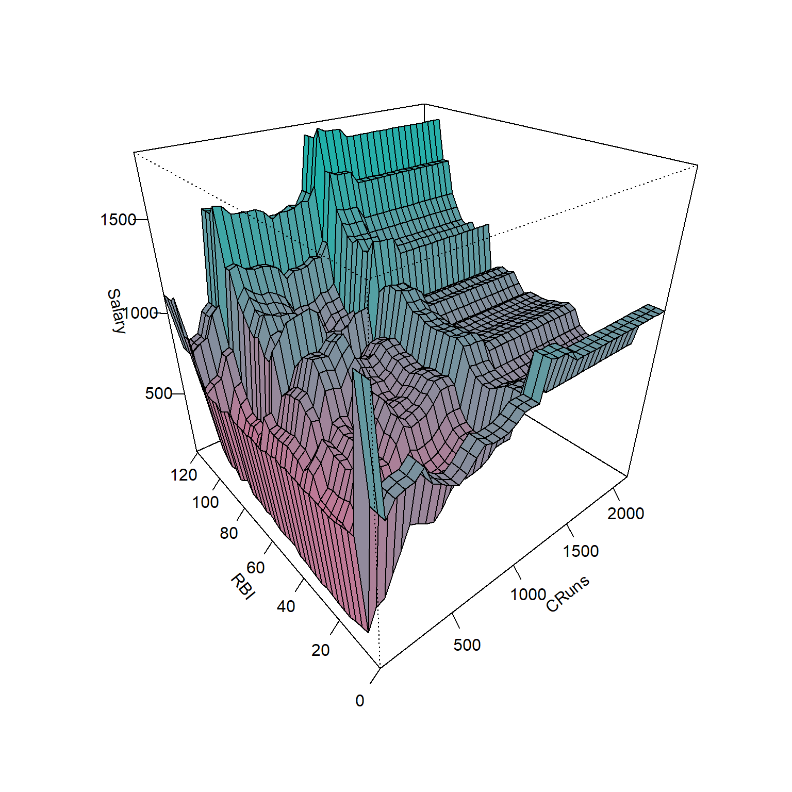

Regressão por árvores de decisão e floresta aleatória
Regressão por árvores de decisão e floresta aleatória
Árvores de regressão
As árvores de decisão foram inicialmente propostas para problemas de classificação, porém, podem ser adaptadas de forma simples para problemas de regressão. A regressão por árvores de decisão ou simplesmente as árvores de regressão envolvem dividir o espaço preditor em várias regiões retangulares simples tomando como predição a média ou outra medida simples das observações de treinamento da região. O conjunto de regras de divisão usado para segmentar o espaço preditor pode ser resumido em um diagrama semelhante a uma árvore, conforme a Figura a seguir.
O gráfico a seguir expõe o modelo obtido em função das duas variáveis preditoras, podendo-se observar que o valor previsto é constante em cada região retangular correspondente ao diagrama ilustrado anteriormente.
Pode-se observar o mesmo modelo de árvore de regressão de forma bidimensional, ficando mais clara a divisão do espaço preditor.
Sejam \(k\) variáveis de entrada e uma resposta, ou seja, \((\mathbf{x}_i,y_i)\), com \(\mathbf{x} = (x_{i1}, x_{i2},..., x_{iK})\), para \(i=1,...,N\) observações de treino, o algoritmo de (Classification and Regression Trees - CART) para regressão define a cada iteração a variável preditora e o seu nível para particionar o espaço dos preditores. Considerando \(J\) regiões \(R_1, R_2, ..., R_J\), o valor predito será uma constante \(\gamma_j\), em cada região, \(j=1,...,J\). Portanto, o modelo de árvore de regressão pode ser definido conforme a Equação a seguir, \(\{R_j,\gamma_j\}, j=1,\ldots,J\), onde \(I(\mathbf{x} \in R_j)\) é uma função indicativa que recebe 1 se \(\mathbf{x}\) pertence à região \(R_j\) e 0 caso contrário. O melhor \(\gamma_j\) para minimizar a soma dos quadrados é a média das observações na região, \(\hat{\gamma}_j = (\bar{y}_i | \mathbf{x}_i \in R_j\)).
\[ \begin{aligned} f(\mathbf{x}) = T(\mathbf{x},R_j,\gamma_j) = \sum_{j=1}^J \gamma_jI(\mathbf{x} \in R_j) \end{aligned} \]
Considerando todos os dados de treinamento, as divisões são definidas tomando uma variável para divisão, \(x_k\), \(k = 1,..., K\), e um ponto de divisão \(x_k = s\), \(R_1(k,s)\) = \({\mathbf{x}|x_k \leq s}\) e \(R_2(k,s)\) = \({\mathbf{x}|x_k>s}\). Portanto, o algoritmo CART busca a variável para o particionamento e o valor desta na divisão resolvendo:
\[ \begin{aligned} \min_{k,s} \Bigl[ \min_{\gamma_1} \sum_{x_i \in R_1(k,s)} (y_i - \gamma_1)^2 + \min_{\gamma_2} \sum_{x_i \in R_2(k,s)} (y_i - \gamma_2)^2 \Bigr]. \end{aligned} \]
O algoritmo CART repete o particionamento recursivamente até um determinado critério de parada ser alcançado, por exemplo, até um número mínimo de observações em cada partição ser atingido.
Seja um conjunto de dados da liga maior americana de Baseball para as temporadas de 1986 e 1987. São disponibilizadas 322 observações de jogadores da liga, incluindo número de batidas, número de corridas, tempo em anos na liga, etc. A variável de interesse a ser predita é o salário do jogador. A seguir é plotado um gráfico de correlação entra tais variáveis.

Seja um modelo de árvore de regressão para prever o salário em função das demais variáveis considerando metade dos dados selecionados aleatoriamente para treino do modelo.
node), split, n, deviance, yval
* denotes terminal node
1) root 132 25650000 510.7
2) CRuns < 325.5 82 6125000 296.3
4) CRuns < 208.5 60 4378000 222.1
8) Hits < 45 5 3103000 558.3 *
9) Hits > 45 55 659200 191.5
18) CRBI < 114.5 36 100900 131.2 *
19) CRBI > 114.5 19 178200 306.0 *
5) CRuns > 208.5 22 514100 498.8 *
3) CRuns > 325.5 50 9578000 862.2
6) RBI < 103 44 4352000 765.5
12) PutOuts < 1113.5 39 2944000 704.6
24) Runs < 38 7 297000 431.0 *
25) Runs > 38 32 2008000 764.5
50) CRuns < 444.5 10 466300 594.7
100) CWalks < 256.5 5 24560 759.4 *
101) CWalks > 256.5 5 170400 430.0 *
51) CRuns > 444.5 22 1123000 841.7
102) CHmRun < 142.5 9 426800 987.2 *
103) CHmRun > 142.5 13 373200 740.9 *
13) PutOuts > 1113.5 5 134200 1241.0 *
7) RBI > 103 6 1797000 1571.0 *O diagrama do modelo pode ser plotado conforme segue. Acima tem-se CRBI<307.5 que consiste na primeira partição ou nó raiz. Qualquer subconjunto de partições interligadas da árvore pode ser chamado de sub-árvore. Cada partição gera duas regiões às quais podem ou não ser mais particionadas. As partições finais são chamadas de nós terminais ou folhas. Neste caso tem-se 10 nós terminais, ou seja, 10 valores previstos distintos para 10 regiões distintas do espaço de preditores. Por exemplo, tomando as seguintes partições CRuns < 325.5 82 6125000 296.3 e CRuns > 208.5 22 514100 498.8 *, tem-se o valor previsto do salário do jogador igual a 498.8 unidades monetárias com soma dos quadrados dos erros igual a 514100.

Pode-se realizar uma validação cruzada para “podar” ou “secar” a árvore com a finalidade de diminuir o sobreajuste.
A árvore podada plotada apresenta apenas 4 folhas, com estrutura mais simples, facilitando a interpretação e buscando melhor generalização.
node), split, n, deviance, yval
* denotes terminal node
1) root 132 25650000 510.7
2) CRuns < 325.5 82 6125000 296.3 *
3) CRuns > 325.5 50 9578000 862.2
6) RBI < 103 44 4352000 765.5
12) PutOuts < 1113.5 39 2944000 704.6 *
13) PutOuts > 1113.5 5 134200 1241.0 *
7) RBI > 103 6 1797000 1571.0 *Bagged trees ou bagging
Bagged trees ou bagging ou, em português, “árvores ensacadas” é um método baseado em árvore de decisão que pode ser aplicado tanto para regressão quanto para classificação. O método consiste em agregar várias árvores de decisão as quais são estimadas a partir de reamostragem por reposição dos dados de treino. Ou seja, antes de estimar cada árvore, realiza-se um sorteio por reposição dos dados de treino, procedimento este chamado de bootstrap e, posteriormente estima-se a árvore para cada amostra “manipulada”. O modelo final é a média de todas as árvores obtidas via bootstrap. Geralmente um número alto de reamostragens é realizado e, portanto, um número alto de árvores é obtido, resultando em um modelo com maior flexibilidade, porém mais difícil de interpretar. O nome bagging vem de bootstrap aggregated ou agregação por bootstrap.
Considere um conjunto de dados com \(N = 10\) observações, com três preditores e uma variável independente, exibido integralmente a seguir.
| i | x1 | x2 | x3 | y |
|---|---|---|---|---|
| 1 | -0.08 | 1.24 | 4.28 | 6.74 |
| 2 | 0.84 | 2.29 | 2.99 | 7.32 |
| 3 | -0.46 | 2.42 | 2.60 | 5.25 |
| 4 | -0.55 | 0.71 | 3.02 | 4.02 |
| 5 | 0.74 | 2.07 | 4.74 | 8.80 |
| 6 | -0.11 | 1.19 | 1.89 | 4.06 |
| 7 | -0.17 | 3.51 | 1.94 | 6.45 |
| 8 | -1.09 | 1.73 | 4.95 | 6.45 |
| 9 | -3.01 | 3.56 | 3.60 | 5.14 |
| 10 | -0.59 | 1.76 | 0.98 | 3.24 |
Um bootstrap deste conjunto de dados pode resultar na reamostragem exibida a seguir. Pode-se observar que as observações 4, 5, 6 e 9 foram sorteadas duas vezes, enquanto as observações 1, 3, 7 e 8 não foram sorteadas.
| i | x1 | x2 | x3 | y |
|---|---|---|---|---|
| 9 | -3.01 | 3.56 | 3.60 | 5.14 |
| 6 | -0.11 | 1.19 | 1.89 | 4.06 |
| 10 | -0.59 | 1.76 | 0.98 | 3.24 |
| 9 | -3.01 | 3.56 | 3.60 | 5.14 |
| 4 | -0.55 | 0.71 | 3.02 | 4.02 |
| 5 | 0.74 | 2.07 | 4.74 | 8.80 |
| 4 | -0.55 | 0.71 | 3.02 | 4.02 |
| 5 | 0.74 | 2.07 | 4.74 | 8.80 |
| 6 | -0.11 | 1.19 | 1.89 | 4.06 |
| 2 | 0.84 | 2.29 | 2.99 | 7.32 |
Abaixo é exibido o diagrama de uma árvore de decisão para a amostra obtida via bootstrap. O bagging repete este processso diversas vezes, reamostrando os dados por bootstrap e estimando para cada “nova” amostra uma nova árvore. Ao final é tomada como predição a média de todas as árvores.
Para o mesmo conjunto de dados, sejam 6 árvores obtidas após reamostragem dos dados via bootstrap exibidas a seguir.

Seja uma observação futura arbitrária com valores exibidos à seguir:
| x1 | x2 | x3 |
|---|---|---|
| 0.14 | 3.27 | 4.57 |
Considerando as 6 árvores obtidas anteriormente, as previsãos destas para tal observação são: 7.302, 5.730, 6.732, 7.680, 7.680 e 5.490. O modelo bagging retorna como resultado a média das previsões das árvores, isto é, \(\hat{y} = \frac{1}{6}\sum_{i=b}^6 T(\mathbf{x}_0)\) = 6.774.
Para o conjunto de dados Hitters seja um modelo de regressão por Bagging considerando duas variáveis, Cruns e RBI. O modelo plotado é muito mais complexo e pretende apresentar uma melhor acuracidade que um modelo baseado em árvore por justamente congregar diversas árvores baseadas na reamostragem dos dados de treino. Porém, Como tais modelos apresentam maior variância que os modelos de árvore para regressão, é importante avaliar se há sobreajuste.
Floresta aleatória
O modelo de floresta aleatória consiste em uma evolução do modelo bagging com a finalidade de diminuir a variância destes. Basicamente, em casos onde há multicolineariedade ou redundância entre as variáves regressoras, o bagging pode acarretar na seleção de apenas alguns dos preditores disponíveis durante o particionamento binário recursivo, de forma que as árvores geradas considerando a reamostragem das observações de treino possam apresentar alta correlação entre si, acarretando em alta variabilidade das previsões finais. No modelo de floresta aleatória, antes de cada partição, são selecionadas aleatoriamente \(m\) variáveis regressoras, \(m<k\), às quais serão consideradas no processo de particionamento binário. Geralmente para regressão recomenda-se \(m=k/3\).
A seguir apresenta-se o gráfico de superfície de um modelo de floresta aleatória para o conjunto de dados Hitters considerando duas variáveis, \(k=2\), Cruns e RBI. Para cada particionamento considerou-se \(m=2/3 \simeq 1\).

Referências
Hastie, T., Tibshirani, R., Friedman, J. H., & Friedman, J. H. (2009). The elements of statistical learning: data mining, inference, and prediction (Vol. 2, pp. 1-758). New York: springer.
Gareth, J., Daniela, W., Trevor, H., & Robert, T. (2013). An introduction to statistical learning: with applications in R. Spinger.